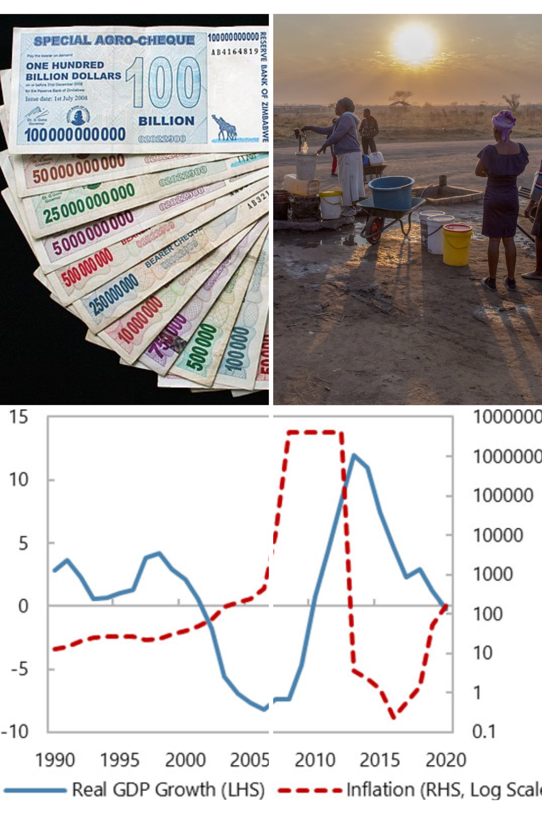

Featured Research Projects
Implications of Monetary Policy on Fiscal Policy
This study explores the complex interrelationship between fiscal and monetary policy, paying particular attention to how changes in interest rates affect government expenditure and borrowing costs. Interest rate adjustments made by central banks to control unemployment, inflation, and economic growth have a big influence on government fiscal policies. In this study, quarterly records from 1961 Q1 to 2023 Q2 are analyzed using data from the Federal Reserve and the Bureau of Economic Analysis. A Structural Vector Autoregression (SVAR) model is used to evaluate the dynamic interactions between important economic variables.The results show that rising borrowing costs brought on by an increase in the Federal Funds Rate have an impact on government spending trends and tax revenue collection. A positive shock to the Federal Funds Rate results in reduced government borrowing and investment, contributing to a persistent government deficit. This research underscores the necessity for policymakers to synchronize monetary and fiscal policies in response to interest rate changes, advocating for proactive budgetary measures and diversified revenue sources to mitigate the adverse effects of rising borrowing costs. Ultimately, the study emphasizes the importance of flexible fiscal strategies to ensure economic stability and growth amid monetary policy adjustments.
Comparative Analysis of Zimbabwe and Its Neighbors on Corruption and Governance
This study examines the significant effects of governance and corruption on Zimbabwe's economic development, with a focus on the agricultural industry and the Marange diamond scandal. Even though the nation has abundant natural resources, such as diamonds, corruption and bad leadership have seriously hampered economic growth and resulted in large losses in potential GDP. The analysis demonstrates how a lack of accountability and transparency has caused funds to be diverted from social programs and public works projects, worsening poverty and stifling growth. The Command Agriculture Program, which uses a variety of interventions to boost agricultural productivity, is also examined in this study. It highlights the urgent need for reforms, such as improving farmers' access to financing, transportation infrastructure, and irrigation systems. By making analogies with nearby nations such as Botswana, which has effectively and leveraged its diamond wealth through efficient governance, this study emphasizes how crucial accountability and transparency are to releasing Zimbabwe's full economic potential. According to the findings, promoting economic growth requires tackling corruption and enhancing governance. In order to achieve a sustainable economic recovery and raise living standards in Zimbabwe, the paper promotes specific policies that increase agricultural productivity, encourage the construction of infrastructure, and guarantee financial inclusion.
A Comprehensive Analysis of Firm Strategies Amid Tariff Uncertainties
In this paper, we analyze firm strategies against the backdrop of tariff uncertainties using game theory and behavioral economics. Businesses operate in an environment of fluctuating tariffs and looming political tensions which requires complex strategy blending rational decisions with psychological factors. This study aims to address the response of firms to tariff uncertainties, focusing on rational strategy factors and behavioral elements like loss aversion and social preferences. As with any business, firms also engage in strategic interactions which can be likened to a chess game, as shown through the application of game theory. Their decisions are informed by the actions of their competitors and the prevailing regulatory environment. The results show that firms often find themselves caught in scenarios akin to the Prisoner’s Dilemma, wherein the temptation to defect for short-term gains results in suboptimal outcomes, including trade wars. The paper also argues that classical game theory lacks the capacity to capture real-world decision-making, firm actions, and firm behavior, advocating that behavioral theory be applied. Honda’s production shift due to U.S. tariffs serves as a case study of how firms are driven by loss aversion and social preferences, which ultimately leads them to prioritize .